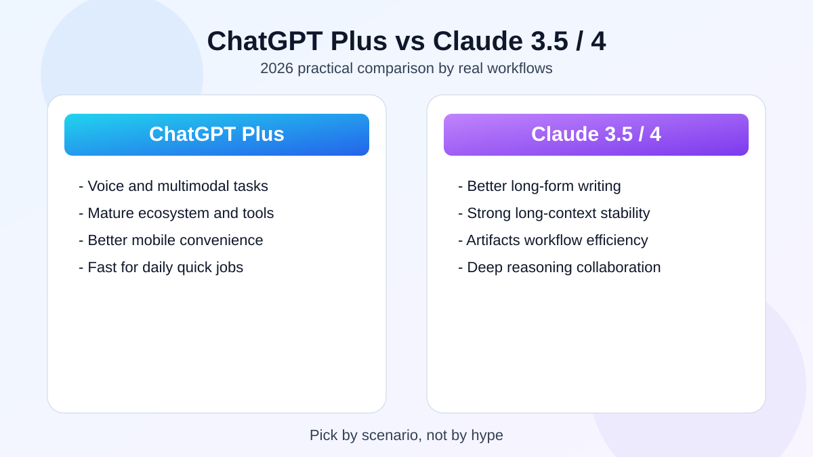
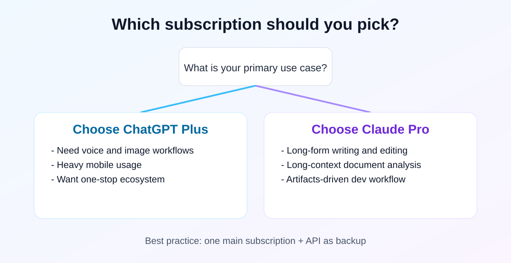

2026 深度实测：ChatGPT Plus 还值得订阅吗？与 Claude 3.5/4 全方位对比
我连续用 30 天后最大的感受：这俩都强，但擅长的活不一样。

先给你一个不绕弯的结论：经常用语音、拍照问问题、手机上高频开 AI，就选 ChatGPT Plus；主要拿来写长文、改稿子、啃大段资料，就选 Claude Pro。
这两年大家老爱问一个问题：每月 20 美金到底值不值。说实话，值不值跟“模型参数”关系没你想的那么大，跟你每天拿它干什么关系更大。我把 ChatGPT Plus 和 Claude 3.5/4 连续用了一个月，场景覆盖写作、代码、长文阅读、语音和手机端。
这篇不讲玄学，只讲体感和结果：什么人该买哪个，什么情况下可以省钱，怎么避免花了钱反而没效率。
一、写作和表达：Claude 目前还是更顺手
如果你主要拿 AI 写文章、改方案、润色邮件，Claude 给我的整体感受就是两个字：省事。不是说它每次都完美，而是它第一稿通常就比较接近“能发”的状态。
ChatGPT 也能写好，但默认输出更像“标准答案”，有时会偏工整、偏模板。你要它写出更像真人的语气，往往得多加几轮限制，比如“少套话、别喊口号、句子短一点”。
Claude 在这块的优势是：你把语气说清楚后，它更容易稳住风格，尤其是那种“专业但别端着”的内容。
1) 长文本处理
长文是我最看重的测试项。像合同、技术文档、财报这种内容，Claude 在“前后文不打架”这件事上更稳。ChatGPT 也能做，但文档太长时偶尔会漏掉前面提过的关键点，需要你提醒它回溯。
2) 逻辑连贯性
做论证型内容时，Claude 的结构感更强，段落之间衔接更自然。ChatGPT 的优势是反应快、覆盖广，适合大量短平快任务。简单说：要深度稿子，Claude 更省改稿时间；要高频快问快答，ChatGPT 更跟手。
二、代码和生产力：一个像执行助手，一个像结对同事
开发者看这两个产品，核心不是“炫技能力”，而是能不能少踩坑、少返工。
1) Artifacts 的效率优势
Claude 的 Artifacts 到现在依然很能打。你一边改需求一边看结果，对做原型和前端的人特别友好。相比纯聊天来回贴代码，这种方式少了很多重复沟通。
2) ChatGPT 的优势场景
ChatGPT 的优势是稳定、通用，而且生态成熟。很多任务不用你从零搭 prompt，直接拿现成工具就能开干，节省启动时间。
3) 复杂问题拆解能力
遇到复杂 SQL、自动化流程、重构建议这类任务时，Claude 更像会先把上下文吃透再回答；ChatGPT 更像执行效率高的工程师，给方案更快更标准。两者都好用，关键看你当下要“想清楚”还是“先跑起来”。
三、多模态和生态：ChatGPT 还是更完整
如果你不想在多个工具之间来回切，ChatGPT 的一体化体验现在仍然更强。
- 实时语音：ChatGPT 的 Advanced Voice 在延迟、连续对话和情绪表达上更成熟，适合口语练习、访谈模拟、单人脑暴。
- 多模态入口：拍照问问题、图文混合分析、快速生成视觉素材，这条链路更顺手。
- 生态能力：经过多年沉淀，GPTs 与外部工具联动能力更丰富，适合“即用型”用户。
尤其是手机党，ChatGPT 用起来确实更顺：打开就能说、拍完就能问，学习成本也低。
四、怎么选：先定主场景，再谈谁更强
我的建议很简单：先想清楚你每天最常用的一个场景，再选主订阅。其他零散需求，用按量 API 补。

适合选 ChatGPT Plus 的人
- 你需要语音、图像、搜索、手机端一体化体验。
- 你更在意“随时可用”，而不是极致文风。
- 你是多任务用户，需要同一工具覆盖更多场景。
适合选 Claude Pro 的人
- 你是重度写作者，追求文案完成度和逻辑表达。
- 你常处理超长文档，重视上下文连续性。
- 你是开发者/产品经理，依赖 Artifacts 的协同效率。
五、省钱方案：真没必要硬上双订阅
绝大多数人不需要同时长期订两个。更实用的组合是“一个主订阅 + 一个按量补充”：主力工具干 80% 的活，剩下 20% 用 API 补能力。
- 按量计费平台：避免固定月费浪费，适合轻中度用户。
- 团队合租/共享方案：适合低预算尝鲜，但要注意账号安全和平台规则。
- 免费额度工具：适合先做输出质量对比，再决定长期投入。
如果你在做内容站，记得把“免费试用入口”和“按场景推荐入口”分开。新手先试用，明确需求的人直接去对应工具页，点击率会更好。
六、给站长的一句实话
“ChatGPT vs Claude”是高价值词，但用户真正想看的不是参数表，而是“我这种人到底该买哪个”。你把这个问题讲透，流量和转化才会一起起来。
我建议的内容顺序是：先有一篇像本文这样的总评测，再拆写作、编程、语音、长文四个分场景页，最后用推荐页和工具页承接点击。这个结构比单篇堆字数更有效。
最后总结：两家都很强，不用神化任何一个。你只要按自己的主场景选，基本不会买错。